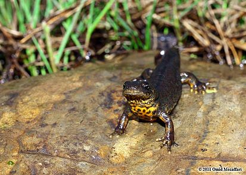
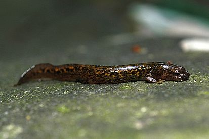
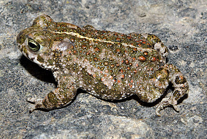
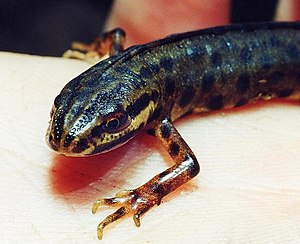
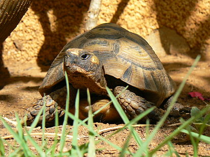
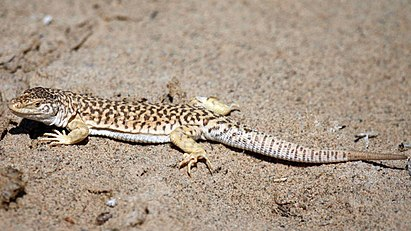
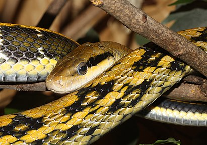
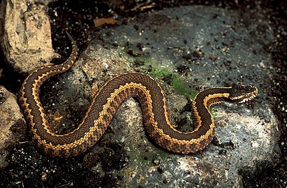

Амфибии

Тритон Карелина
Тритон Карелина (лат. Triturus karelinii) — вид животных из рода тритонов (лат. Triturus)
отряда хвостатых земноводных. Тритон Карелина распространён в Болгарии, Греции, западной и северной
части Турции, Грузии, ограниченные популяции в Сербии и на Черноморском побережье России, также
встречается на горной территории Крымского полуострова.

Уссурийский когтистый тритон
Уссурийский когтистый тритон, или уссурийский тритон, или уссурийский безлёгочный
тритон, или когтистый тритон (лат. Onychodactylus fischeri) — вид хвостатого земноводного рода
безлёгочных тритонов семейства углозубов. Населяет хвойные и смешанные кедрово-широколиственные леса
на юге Дальнего Востока России, в Корее и на востоке Китая. Живёт в холодных (не выше 10°—12 °C)
горных ручьях, текущих среди леса. Держится в воде или под замшелыми камнями у воды. Необходимым
условием является наличие толстого слоя камней, гальки, сильное затенение и высокая влажность
берегов. Тритон не переносит высыхания кожи, поскольку лёгких у него нет: дышит он через кожу и
слизистую оболочку ротовой полости. Активен в ночное время, при опасности тут же зарывается в
гальку. Питается бокоплавами, моллюсками, насекомыми.

Камышовая жаба
Камышовая жаба (лат. Epidalea calamita) — вид бесхвостых земноводных из семейства жаб,
единственный представитель рода Epidalea. Широко распространена в Европе, на севере и востоке
доходит до Великобритании, обитает также на юге Швеции, в Прибалтике, западной Белоруссии и на
северо-западе Украины. На территории России известна только в Калининградской области. Охраняется
Бернской Конвенцией (приложение II). Вид занесён в Красные книги России, Беларуси, Латвии, Литвы,
Украины и Эстонии.

Обыкновенный тритон
Обыкновенный тритон (лат. Lissotriton vulgaris) — наиболее распространённый вид тритонов из
рода малых тритонов (Lissotriton) отряда хвостатых земноводных. Вид впервые был описан в 1758 году
шведским натуралистом Карлом Линнеем. Вид широко распространён на большей части Европы (за
исключением всего Пиренейского полуострова, юга Апеннинского полуострова, южной части Франции и
северной части Скандинавского полуострова). На востоке ареал захватывает часть Азии до Алтайских
гор. Обыкновенный тритон — один из самых мелких видов тритонов, длина тела от 7 до 11 см, включая
хвост, который составляет половину от общей длины тела.

Средиземноморская черепаха
Средиземноморская черепа́ха, или греческая черепаха, или кавказская черепаха (лат.
Testudo graeca) — один из четырёх европейских членов семейства сухопутных черепах (лат.
Testudinidae). Другими членами этого семейства являются — балканская черепаха (лат. Testudo
hermanni), окаймлённая сухопутная черепаха (лат. Testudo marginata) и среднеазиатская черепаха (лат.
Testudo horsfieldii). Ареалом средиземноморской черепахи являются Северная Африка, южная Европа и
юго-западная Азия. На территории бывшего Советского Союза она распространена на черноморском
побережье Кавказа (от российской Анапы на севере до абхазского Сухума на юге), а также в Грузии,
Армении, Азербайджане и Дагестане.

Гобийская ящурка
Гобийская ящурка, или ящурка Пржевальского (лат. Eremias przewalskii) — вид ящериц из рода
Ящурок. Место обитания: Пустыня Аланшань.
Гобийская ящурка распространена в северном Китае (Внутренняя Монголия и СУАР), в Монголии (на западе
и юге страны). В России встречается в Туве, где в пойме реки Нарийн-Гол обитает подвид тувинская
ящурка (Eremias przewalskii tuvensis), включённый в Красную книгу России.

Тонкохвостый лазающий полоз
Тонкохвостый лазающий полоз (Elaphe taeniurus) — неядовитая змея семейства ужеобразные. На данный
момент для всех подвидов тонкохвостого полоза описаны конкретные ареалы. Ни
один ареал не пересекает границу Российской Федерации. Предполагается, что в момент включения
тонкохвостого полоза в
Красную Книгу СССР, минприроды руководствовалось только фактом находки, не используя научные труды,
ибо на момент описания находки подвидов не существовало. С
2014 года стоит в статусе на исключение из Красной Книги РФ и ждет только официального переиздания.
2 апреля 2020 года ошибку МинПрироды СССР исправили и, на основании утвержденного нового списка
Красной Книги, тонкохвостый полоз полноценно покинул Красную Книгу Российской Федерации.
Так же номинативный подвид индуцирован в Восточной Фландрии (Бельгия).

Гадюка Динника
Гадюка Динника (Vipera dinniki) — вид ядовитых змей рода Настоящих гадюк семейства
Гадюковых. Назван в честь русского зоолога Николая Яковлевича Динника (1847—1917). Гадюка Динника
распространена на Большом Кавказе в пределах России, Грузии и Азербайджана. Её ареал охватывает
субальпийский пояс гор, как на северном, так и на южном склонах от Фишт-Оштена на западе до
восточной Грузии и северо-западного Азербайджана (до Лагодехского и Закатальского заповедников) на
востоке. Сплошной ареал простирается на востоке до реки Большая Лаба, а далее известен ряд
изолированных популяций из Карачаево—Черкесии, Кабардино — Балкарии, Северной Осетии, Ингушетии,
Чечни, Дагестана, северной и восточной Грузии.